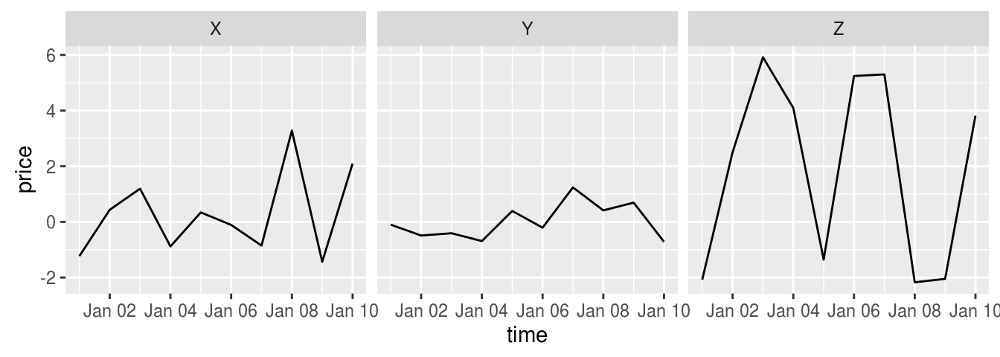
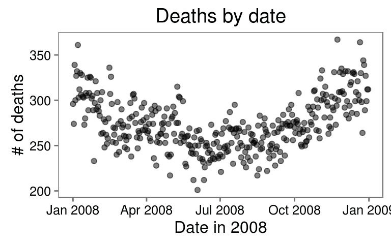
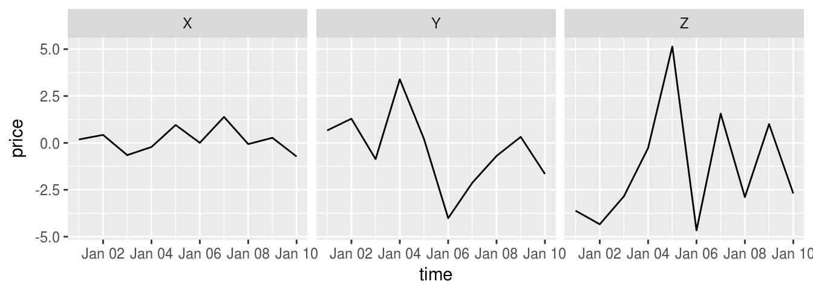
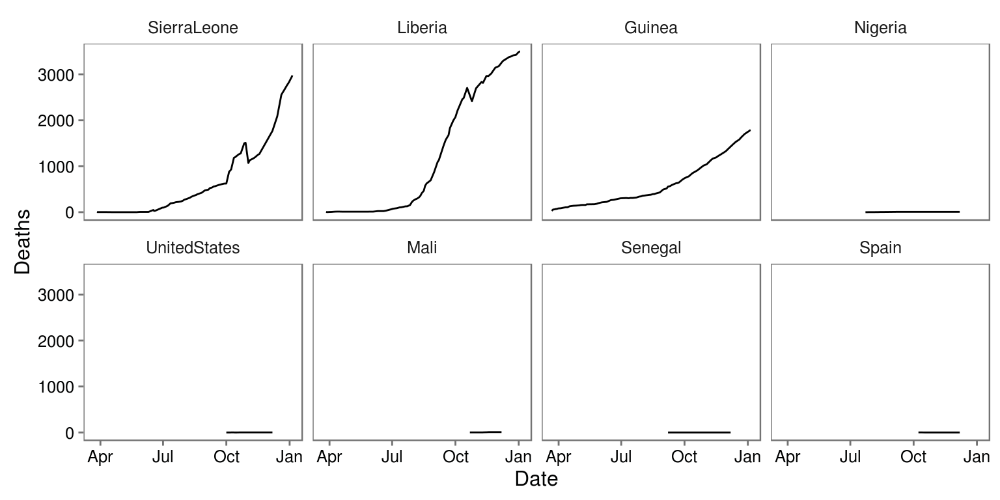
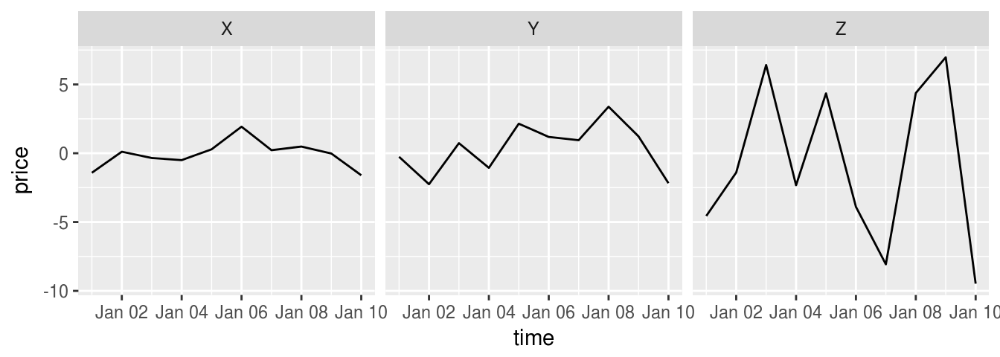
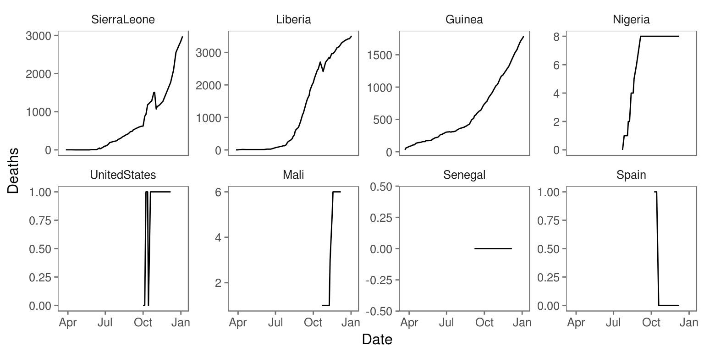
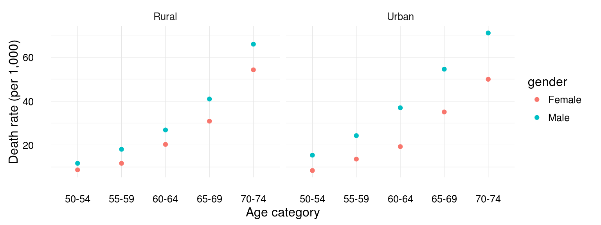
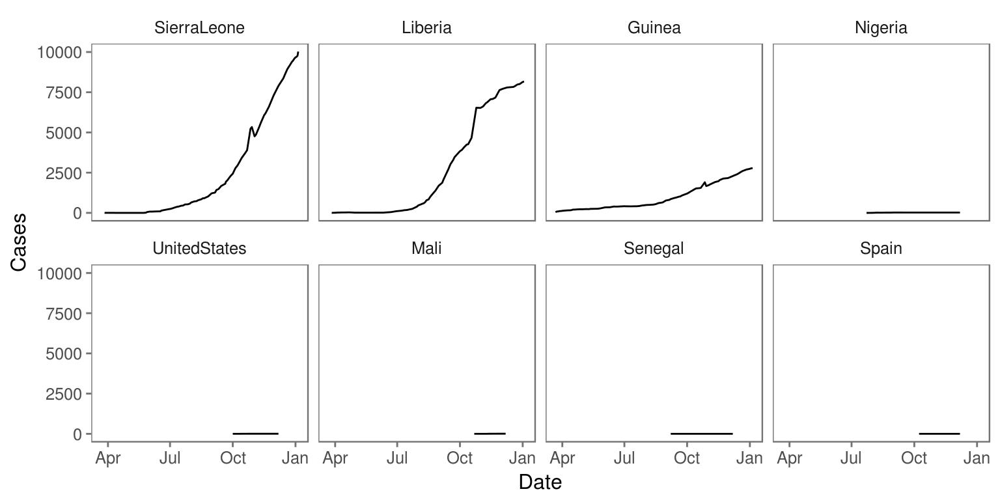

Chapter 6 Entering and cleaning data #2
Download a pdf of the lecture slides covering this topic.
6.1 Joining datasets
So far, you have only worked with a single data source at a time. When you work on your own projects, however, you typically will need to merge together two or more datasets to create the a data frame to answer your research question. For example, for air pollution epidemiology, you will often have to join several datasets:
- Health outcome data (e.g., number of deaths per day)
- Air pollution concentrations
- Weather measurements (since weather can be a confounder)
- Demographic data
The dplyr package has a family of different functions to join two dataframes together, the *_join family of functions. All combine two dataframes, which I’ll call x and y here.
The functions include:
inner_join(x, y): Keep only rows where there are observations in bothxandy.left_join(x, y): Keep all rows fromx, whether they have a match inyor not.right_join(x, y): Keep all rows fromy, whether they have a match inxor not.full_join(x, y): Keep all rows from bothxandy, whether they have a match in the other dataset or not.
In the examples, I’ll use two datasets, x and y. Both datasets include the column course. The other column in x is grade, while the other column in y is day. Observations exist for courses x and y in both datasets, but for w and z in only one dataset.
x <- data.frame(course = c("x", "y", "z"),
grade = c(90, 82, 78))
y <- data.frame(course = c("w", "x", "y"),
day = c("Tues", "Mon / Fri", "Tue"))Here is what these two example datasets look like:
x## course grade
## 1 x 90
## 2 y 82
## 3 z 78y## course day
## 1 w Tues
## 2 x Mon / Fri
## 3 y TueWith inner_join, you’ll only get the observations that show up in both datasets. That means you’ll lose data on z (only in the first dataset) and w (only in the second dataset).
inner_join(x, y)## Joining, by = "course"## course grade day
## 1 x 90 Mon / Fri
## 2 y 82 TueWith left_join, you’ll keep everything in x (the “left” dataset), but not keep things in y that don’t match something in x. That means that, here, you’ll lose w:
left_join(x, y)## Joining, by = "course"## course grade day
## 1 x 90 Mon / Fri
## 2 y 82 Tue
## 3 z 78 <NA>right_join is the opposite:
right_join(x, y)## Joining, by = "course"## course grade day
## 1 w NA Tues
## 2 x 90 Mon / Fri
## 3 y 82 Tuefull_join keeps everything from both datasets:
full_join(x, y)## Joining, by = "course"## course grade day
## 1 x 90 Mon / Fri
## 2 y 82 Tue
## 3 z 78 <NA>
## 4 w NA Tues6.2 Tidy data
All of the material in this section comes directly from Hadley Wickham’s paper on tidy data. You will need to read this paper to prepare for the quiz on this section.
Getting your data into a “tidy” format makes it easier to model and plot. By taking the time to tidy your data at the start of an analysis, you will save yourself time, and make it easier to plan out later steps.
Characteristics of tidy data are:
- Each variable forms a column.
- Each observation forms a row.
- Each type of observational unit forms a table.
Here are five common problems that Hadley Wickham has identified that keep data from being tidy:
- Column headers are values, not variable names.
- Multiple variables are stored in one column.
- Variables are stored in both rows and columns.
- Multiple types of observational units are stored in the same table.
- A single observational unit is stored in multiple tables.
Here are examples (again, from Hadley Wickham’s paper on tidy data, which is required reading for this week of the course) of each of these problems.
- Column headers are values, not variable names.

Solution:

- Multiple variables are stored in one column.

Solution:

- Variables are stored in both rows and columns.

Solution:

- Multiple types of observational units are stored in the same table.

Solution:

- A single observational unit is stored in multiple tables.
Example: exposure and outcome data stored in different files:
- File 1: Daily mortality counts
- File 2: Daily air pollution measurements
6.3 Gathering
There are two functions from the tidyr package (another member of the tidyverse) that you can use to change between wide and long data: gather and spread. Here is a description of these two functions:
gather: Take several columns and gather them into two columns, one with the former column names, and one with the former cell values.spread: Take two columns and spread them into multiple columns. Column names for the new columns will come from one of the two original columns, while cell values will come from the other of the original columns.
The following examples are from tidyr help files and show the effects of gathering and spreading a dataset.
Here is some simulated wide data:
wide_stocks[1:3, ]## time X Y Z
## 1 2009-01-01 -0.008777414 -0.1970092 -4.081962
## 2 2009-01-02 -0.420702327 0.8521368 7.995469
## 3 2009-01-03 -0.205371956 1.8792536 -4.414143In the wide_stocks dataset, there are separate columns for three different stocks (X, Y, and Z). Each cell gives the value for a certain stock on a certain day. This data isn’t “tidy”, because the identify of the stock (X, Y, or Z) is a variable, and you’ll probably want to include it as a variable in modeling.
wide_stocks[1:3, ]## time X Y Z
## 1 2009-01-01 -0.008777414 -0.1970092 -4.081962
## 2 2009-01-02 -0.420702327 0.8521368 7.995469
## 3 2009-01-03 -0.205371956 1.8792536 -4.414143If you want to convert the dataframe to have all stock values in a single column, you can use gather to convert wide data to long data:
long_stocks <- gather(wide_stocks, key = stock,
value = price, -time)
long_stocks[1:5, ]## time stock price
## 1 2009-01-01 X -0.008777414
## 2 2009-01-02 X -0.420702327
## 3 2009-01-03 X -0.205371956
## 4 2009-01-04 X 0.009492552
## 5 2009-01-05 X -0.397681834In this “long” dataframe, there is now one column that gives the identify of the stock (stock) and another column that gives the price of that stock that day (price):
long_stocks[1:5, ]## time stock price
## 1 2009-01-01 X -0.008777414
## 2 2009-01-02 X -0.420702327
## 3 2009-01-03 X -0.205371956
## 4 2009-01-04 X 0.009492552
## 5 2009-01-05 X -0.397681834The format for a gather call is:
## Generic code
new_df <- gather(old_df,
key = [name of column with old column names],
value = [name of column with cell values],
- [name of column(s) you want to
exclude from gather])Three important notes:
- Everything is gathered into one of two columns – one column with the old column names, and one column with the old cell values
- With the
keyandvaluearguments, you are just providing column names for the two columns that everything’s gathered into. - If there is a column you don’t want to gather (
datein the example), use-to exclude it in thegathercall.
Notice how easy it is, now that the data is gathered, to use stock for aesthetics of faceting in a ggplot2 call:
ggplot(long_stocks, aes(x = time, y = price)) +
geom_line() +
facet_grid(. ~ stock)
If you have data in a “long” format and would like to spread it out, you can use spread to do that:
stocks <- spread(long_stocks, key = stock, value = price)
stocks[1:5, ]## time X Y Z
## 1 2009-01-01 -0.008777414 -0.1970092 -4.081962
## 2 2009-01-02 -0.420702327 0.8521368 7.995469
## 3 2009-01-03 -0.205371956 1.8792536 -4.414143
## 4 2009-01-04 0.009492552 5.3075692 3.775584
## 5 2009-01-05 -0.397681834 -2.4308646 -2.823716Notice that this reverses the action of gather.
“Spread” data is typically not tidy, so you often won’t want to use spread when you are preparing data for analysis. However, spread can be very helpful in creating clean tables for final reports and presentations.
For example, if you wanted to create a table with means and standard deviations for each of the three stocks, you could use spread to rearrange the final summary to create an attractive table.
stock_summary <- long_stocks %>%
group_by(stock) %>%
summarize(N = n(), mean = mean(price), sd = sd(price))
stock_summary## # A tibble: 3 × 4
## stock N mean sd
## <chr> <int> <dbl> <dbl>
## 1 X 10 -0.3120634 0.4155637
## 2 Y 10 0.6077428 2.1358896
## 3 Z 10 0.2511689 4.9647028stock_summary %>%
mutate("Mean (Std.dev.)" = paste0(round(mean, 2), " (",
round(sd, 2), ")")) %>%
select(- mean, - sd) %>%
gather(key = "Statistic", value = "Value", -stock) %>%
spread(key = stock, value = Value) %>%
knitr::kable()| Statistic | X | Y | Z |
|---|---|---|---|
| Mean (Std.dev.) | -0.31 (0.42) | 0.61 (2.14) | 0.25 (4.96) |
| N | 10 | 10 | 10 |
6.4 In-course exercise
For today’s exercise, we’ll be using the following three datasets (click on the file name to access the correct file for today’s class for each dataset):
| File name | Description |
|---|---|
country_timeseries.csv |
Ebola cases by country for the 2014 outbreak |
mexico_exposure.csv and mexico_deaths.csv |
Daily death counts and environmental measurements for Mexico City, Mexico, for 2008 |
measles_data/ |
Number of cases of measles in CA since end of Dec. 2014 |
Note that you likely have already downloaded all the files in the measles_data folder, since we used them in an earlier in-course exercise. If so, there is no need to re-download those files.
Here are the sources for this data:
country_timeseries.csv: Caitlin Rivers’ Ebola repository (Caitlin originally collected this data from the WHO and WHO Situation reports)mexico_exposure.csvandmexico_deaths.csv: one of Hadley Wickham’s GitHub repos (Hadley got the data originally from the Secretaria de Salud of Mexico’s website, although it appears the link is now broken. I separated the data into two dataframes so students could practice merging.)measles_data/: one of scarpino’s GitHub repos (Data originally from pdfs from the California Department of Public Health)
If you want to use these data further, you should go back and pull them from their original sources. They are here only for use in R code examples for this course.
Here are some of the packages you will need for this exercise:
library(tidyverse)
library(gridExtra)
library(ggthemes)6.4.1 Designing tidy data
- Check out the
country_timeseries.csvfile on Ebola for this week’s example data. Talk with your partner and decide what changes you would need to make to this dataset to turn it into a “tidy” dataset, in particular which of the five common “untidy” problems the data currently has and why. - Do the same for the data on daily mortality and daily weather in Mexico.
- Do the same for the set of files with measles data.
6.4.2 Easier data wrangling
- Use
read_csvto read the mexico data (exposure and mortality) directly from GitHub into your R session. Call the dataframesmex_deathsandmex_exp. - Merge the two datasets together to create the dataframe
mexico. Exclude all columns except the outcome (deaths), date, and mean temperature. Convert the date to a date class. - Try combining all the steps in the previous task into one “chained” command using the pipe operator,
%>%. - Use this new dataframe to plot deaths by date using
ggplot.
6.4.2.1 Example R code
Use read_csv to read the mexico data (exposure and mortality) directly from GitHub into your R session. Call the dataframes mex_deaths and mex_exp:
deaths_url <- paste0("https://github.com/geanders/RProgrammingForResearch/",
"raw/master/data/mexico_deaths.csv")
mex_deaths <- read_csv(deaths_url)
head(mex_deaths)## # A tibble: 6 × 2
## day deaths
## <chr> <int>
## 1 1/1/08 296
## 2 1/2/08 274
## 3 1/3/08 339
## 4 1/4/08 300
## 5 1/5/08 327
## 6 1/6/08 332exposure_url <- paste0("https://github.com/geanders/RProgrammingForResearch/",
"raw/master/data/mexico_exposure.csv")
mex_exp <- read_csv(exposure_url)
head(mex_exp)## # A tibble: 6 × 14
## day temp_min temp_max temp_mean humidity wind NO
## <chr> <dbl> <dbl> <dbl> <dbl> <dbl> <dbl>
## 1 1/1/08 7.8 17.8 11.770833 53.45833 2.6625000 0.009250000
## 2 1/2/08 2.6 9.8 6.637500 61.70833 3.3458333 0.005416667
## 3 1/3/08 1.1 15.6 7.041667 59.91667 1.8857143 0.015958333
## 4 1/4/08 3.1 20.6 10.862500 57.54167 1.1958333 0.040833333
## 5 1/5/08 6.0 21.3 13.404167 45.70833 0.9875000 0.046916667
## 6 1/6/08 7.2 22.1 14.341667 40.75000 0.8541667 0.028583333
## # ... with 7 more variables: NO2 <dbl>, NOX <dbl>, O3 <dbl>, CO <dbl>,
## # SO2 <dbl>, PM10 <dbl>, PM25 <dbl>Merge the two datasets together to create the dataframe mexico. Exclude all columns except the outcome (deaths), date, and mean temperature. Convert the date to a date class.
mexico <- full_join(mex_deaths, mex_exp, by = "day")
mexico <- select(mexico, day, deaths, temp_mean)
library(lubridate) ## For parsing dates
mexico <- mutate(mexico, day = mdy(day))Try combining all the steps in the previous task into one “chained” command:
mexico <- full_join(mex_deaths, mex_exp, by = "day") %>%
select(day, deaths, temp_mean) %>%
mutate(day = mdy(day))
head(mexico)## # A tibble: 6 × 3
## day deaths temp_mean
## <date> <int> <dbl>
## 1 2008-01-01 296 11.770833
## 2 2008-01-02 274 6.637500
## 3 2008-01-03 339 7.041667
## 4 2008-01-04 300 10.862500
## 5 2008-01-05 327 13.404167
## 6 2008-01-06 332 14.341667Use this new dataframe to plot deaths by date using ggplot:
ggplot(mexico, aes(x = day, y = deaths)) +
geom_point(size = 1.5, alpha = 0.5) +
xlab("Date in 2008") + ylab("# of deaths") +
ggtitle("Deaths by date") +
theme_few()
6.4.3 More extensive data wrangling
- Read the ebola data directly from GitHub into your R session. Call the dataframe
ebola. - Use
dplyrfunctions to create a tidy dataset. First, change it from “wide” data to “long” data. Name the new column with the keyvariableand the new column with the valuescount. - Run the following code to create new columns named
typeandcountrythat split up thevariablecolumn into type (“Cases” or “Deaths”) and country (“Guinea”, “Liberia”, etc.). (This type of code is moving towards using regular expressions to clean up really messy data, which we’ll talk about some in the third section.)
foo <- strsplit(as.character(ebola$variable), split = "_")
bar <- matrix(unlist(foo), ncol = 2, byrow = TRUE)
ebola$type <- factor(bar[ , 1])
ebola$country <- factor(bar[ , 2])- Use
dplyrfunctions and piping to removeDayandvariable(now that you’ve split it intotypeandcountry) and to convertDateto a date class. - Use the
dplyrfunctionspread()to convert the data so you have separate columns for the two variables of numbers ofCasesandDeaths. - Remove any observations where counts of cases or deaths are missing for that country.
- Challenge question (you can do the next step without doing this, but your graphs won’t be in order): Create a dataframe called
case_sumthat gives the total number of cases recorded for each country. (Hint: Use thedplyrfunctionsgroup_by()andsummarize().) Usearrange()to re-order this dataset by the order of the number of cases, and then use this arrangement to re-order the levels incountryin your maineboladataset, so that your graphs in the next step will be ordered from the country with the most ebola cases to the one with the least. - Now that your data is tidy, create one plot showing ebola cases by date, faceted by country, and one showing ebola deaths by date, also faceted by country. Try using the option
scales = "free_y"in thefacet_wrap()function (in thegridExtrapackage) and see how that changes these graphs. - Based on these plots, what would your next questions be about this data before you used it for an analysis?
- Super-challenge question: Can you put all of the steps of this cleaning process into just a few “chaining” calls?
6.4.3.1 Example R code
Read the data in using read_csv. (Review question: Why can’t you read it directly using read.csv()?)
ebola_url <- paste0("https://github.com/geanders/RProgrammingForResearch/",
"raw/master/data/country_timeseries.csv")
ebola <- read_csv(ebola_url)
head(ebola)## # A tibble: 6 × 18
## Date Day Cases_Guinea Cases_Liberia Cases_SierraLeone
## <chr> <int> <int> <int> <int>
## 1 1/5/2015 289 2776 NA 10030
## 2 1/4/2015 288 2775 NA 9780
## 3 1/3/2015 287 2769 8166 9722
## 4 1/2/2015 286 NA 8157 NA
## 5 12/31/2014 284 2730 8115 9633
## 6 12/28/2014 281 2706 8018 9446
## # ... with 13 more variables: Cases_Nigeria <int>, Cases_Senegal <int>,
## # Cases_UnitedStates <int>, Cases_Spain <int>, Cases_Mali <int>,
## # Deaths_Guinea <int>, Deaths_Liberia <int>, Deaths_SierraLeone <int>,
## # Deaths_Nigeria <int>, Deaths_Senegal <int>, Deaths_UnitedStates <int>,
## # Deaths_Spain <int>, Deaths_Mali <int>Change the data to long data using the gather() function from dplyr:
ebola <- gather(ebola, variable, count, -Date, -Day)
head(ebola)## # A tibble: 6 × 4
## Date Day variable count
## <chr> <int> <chr> <int>
## 1 1/5/2015 289 Cases_Guinea 2776
## 2 1/4/2015 288 Cases_Guinea 2775
## 3 1/3/2015 287 Cases_Guinea 2769
## 4 1/2/2015 286 Cases_Guinea NA
## 5 12/31/2014 284 Cases_Guinea 2730
## 6 12/28/2014 281 Cases_Guinea 2706Split variable into type and country:
foo <- strsplit(as.character(ebola$variable), split = "_")
ebola[ , c("type", "country")] <- matrix(unlist(foo), ncol = 2, byrow = TRUE)
head(ebola)## # A tibble: 6 × 6
## Date Day variable count type country
## <chr> <int> <chr> <int> <chr> <chr>
## 1 1/5/2015 289 Cases_Guinea 2776 Cases Guinea
## 2 1/4/2015 288 Cases_Guinea 2775 Cases Guinea
## 3 1/3/2015 287 Cases_Guinea 2769 Cases Guinea
## 4 1/2/2015 286 Cases_Guinea NA Cases Guinea
## 5 12/31/2014 284 Cases_Guinea 2730 Cases Guinea
## 6 12/28/2014 281 Cases_Guinea 2706 Cases GuineaUse dplyr functions and piping to remove Day and variable and to convert Date to a date class:
ebola <- select(ebola, -Day, -variable) %>%
mutate(Date = mdy(Date))
head(ebola)## # A tibble: 6 × 4
## Date count type country
## <date> <int> <chr> <chr>
## 1 2015-01-05 2776 Cases Guinea
## 2 2015-01-04 2775 Cases Guinea
## 3 2015-01-03 2769 Cases Guinea
## 4 2015-01-02 NA Cases Guinea
## 5 2014-12-31 2730 Cases Guinea
## 6 2014-12-28 2706 Cases GuineaConvert the data so you have separate columns for the two variables of numbers of Cases and Deaths:
ebola <- spread(ebola, type, count)
head(ebola)## # A tibble: 6 × 4
## Date country Cases Deaths
## <date> <chr> <int> <int>
## 1 2014-03-22 Guinea 49 29
## 2 2014-03-22 Liberia NA NA
## 3 2014-03-22 Mali NA NA
## 4 2014-03-22 Nigeria NA NA
## 5 2014-03-22 Senegal NA NA
## 6 2014-03-22 SierraLeone NA NARemove any observations where counts of cases or deaths are missing for that country:
ebola <- filter(ebola, !is.na(Cases) & !is.na(Deaths))
head(ebola)## # A tibble: 6 × 4
## Date country Cases Deaths
## <date> <chr> <int> <int>
## 1 2014-03-22 Guinea 49 29
## 2 2014-03-24 Guinea 86 59
## 3 2014-03-25 Guinea 86 60
## 4 2014-03-26 Guinea 86 62
## 5 2014-03-27 Guinea 103 66
## 6 2014-03-27 Liberia 8 6Create a dataframe called case_sum that gives the total number of cases recorded for each country. Use arrange() to re-order this dataset by the order of the number of cases:
case_sum <- group_by(ebola, country) %>%
summarize(Cases = sum(Cases, na.rm = TRUE))
case_sum## # A tibble: 8 × 2
## country Cases
## <chr> <int>
## 1 Guinea 82099
## 2 Liberia 191351
## 3 Mali 42
## 4 Nigeria 636
## 5 Senegal 24
## 6 SierraLeone 211169
## 7 Spain 16
## 8 UnitedStates 59Use this arrangement to re-order the levels in country in your main ebola dataset, so that your graphs in the next step will be ordered from the country with the most ebola cases to the one with the least:
case_sum <- arrange(case_sum, desc(Cases))
case_sum## # A tibble: 8 × 2
## country Cases
## <chr> <int>
## 1 SierraLeone 211169
## 2 Liberia 191351
## 3 Guinea 82099
## 4 Nigeria 636
## 5 UnitedStates 59
## 6 Mali 42
## 7 Senegal 24
## 8 Spain 16ebola <- mutate(ebola,
country = factor(country, levels = case_sum$country))
levels(ebola$country)## [1] "SierraLeone" "Liberia" "Guinea" "Nigeria"
## [5] "UnitedStates" "Mali" "Senegal" "Spain"Now that your data is tidy, create one plot showing ebola cases by date, faceted by country, and one showing ebola deaths by date, also faceted by country:
ggplot(ebola, aes(x = Date, y = Cases)) +
geom_line() +
facet_wrap(~ country, ncol = 4) +
theme_few()
ggplot(ebola, aes(x = Date, y = Deaths)) +
geom_line() +
facet_wrap(~ country, ncol = 4) +
theme_few()
Try using the option scales = "free_y" in the facet_wrap() function (in the gridExtra package) and see how that changes these graphs:
ggplot(ebola, aes(x = Date, y = Cases)) +
geom_line() +
facet_wrap(~ country, ncol = 4, scales = "free_y") +
theme_few()
ggplot(ebola, aes(x = Date, y = Deaths)) +
geom_line() +
facet_wrap(~ country, ncol = 4, scales = "free_y") +
theme_few()
Put all of the steps of this cleaning process into just a few “chaining” calls. (Note: I’m using sub here instead of strsplit for the variable-splitting step, just to keep the code a bit cleaner. Again, this is using regular expressions, which we’ll cover more later in the course.)
ebola <- read_csv(ebola_url) %>%
gather(variable, count, -Date, -Day) %>%
mutate(type = sub("_.*", "", variable),
country = sub(".*_", "", variable)) %>%
select(-Day, -variable) %>%
mutate(Date = mdy(Date)) %>%
spread(type, count) %>%
filter(!is.na(Cases) & !is.na(Deaths))
case_sum <- group_by(ebola, country) %>%
summarize(Cases = sum(Cases, na.rm = TRUE)) %>%
arrange(desc(Cases))
ebola <- mutate(ebola,
country = factor(country, levels = case_sum$country))
case_sum## # A tibble: 8 × 2
## country Cases
## <chr> <int>
## 1 SierraLeone 211169
## 2 Liberia 191351
## 3 Guinea 82099
## 4 Nigeria 636
## 5 UnitedStates 59
## 6 Mali 42
## 7 Senegal 24
## 8 Spain 16head(ebola)## # A tibble: 6 × 4
## Date country Cases Deaths
## <date> <fctr> <int> <int>
## 1 2014-03-22 Guinea 49 29
## 2 2014-03-24 Guinea 86 59
## 3 2014-03-25 Guinea 86 60
## 4 2014-03-26 Guinea 86 62
## 5 2014-03-27 Guinea 103 66
## 6 2014-03-27 Liberia 8 66.4.4 Tidying VADeaths data
R comes with a dataset called VADeaths that gives death rates per 1,000 people in Virginia in 1940 by age, sex, and rural / urban.
- Use
data("VADeaths")to load this data. Make sure you understand what each column and row is showing – use the helpfile (?VADeaths) if you need. - Go through the three characteristics of tidy data and the five common problems in untidy data that we talked about in class. Sketch out (you’re welcome to use the whiteboards) what a tidy version of this data would look like.
- Open a new R script file. Write R code to transform this dataset into a tidy dataset. Try using a pipe chain, with
%>%and tidyverse functions, to clean the data. - Use the tidy data to create the following graph:

There is no example R code for this – try to figure out the code yourselves. We will go over a solution in class. You may find the RStudio Data Wrangling cheatsheet helpful for remembering which tidyverse functions do what.
6.4.5 Exploring Fatality Analysis Reporting System (FARS) data
- Explore the interactive visualization at http://metrocosm.com/10-years-of-traffic-accidents-mapped.html. This was created by Max Galka using this dataset.
- Go to FARS web page. We want to get the raw data on fatal accidents. Navigate this page to figure out how you can get this raw data for the whole county for 2015. Save 2015 data to your computer. What is the structure of how this data is saved (e.g., directory structure, file structure)?
- On the FARS web page, find the documentation describing this raw data. Look through both this documentation and the raw files you downloaded to figure out what information is included in the data.
- Read the
accident.csvfile for 2015 into R (this is one of the files you’ll get if you download the raw data for 2015). Use the documentation to figure out what each column represents. - Discuss what steps you would need to take to create the following plot. To start, don’t write any code, just develop a plan. Talk about what the dataset should look like right before you create the plot and what functions you could use to get the data from its current format to that format. (Hint: Functions from the
lubridatepackage will be very helpful, includingydayandwday). - Discuss which of the variables in this dataset could be used to merge the dataset with other appropriate data, either other datasets in the FARS raw data, or outside datasets.
- Try to write the code to create this plot. This will include some code for cleaning the data and some code for plotting. I will add one example answer after class, but I’d like you to try to figure it out yourselves first.
